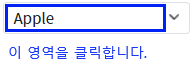
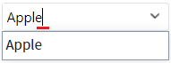
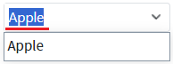

AutoComplete의 'editType' 속성을 사용하여 편집 모드로 전환되었을 때 입력 필드의 문자열 편집 유형을 설정한 예제입니다.
속성의 설정에 따른 동작은 다음과 같습니다.
"focus" : 편집 모드 전환 시 입력 필드의 문자열 마지막에 커서가 위치됩니다.
"select" : [default] 편집 모드 전환 시 입력 필드의 문자열이 선택됩니다.
편집 모드 전환 시 입력 필드의 문자열 마지막에 커서 위치시키기
편집 모드 전환 시 입력 필드의 문자열 선택하기
1
STEP 1: 초기 상태 확인하기
예제 영역 'editType: focus'에 구성된 예제를 확인합니다.2
STEP 2: 편집 모드 전환하기
'AutoComplete'을 클릭합니다. 오른쪽에 구성된 버튼을 클릭하면 목록이 표시됩니다. 버튼을 제외한 컴포넌트 영역을 클릭합니다.
Image 1.브라우저(Chrome) 실행 예시

3
STEP 3: 실행 결과를 확인합니다.
편집 모드로 전환되고 입력 필드의 문자열 마지막에 커서가 위치됩니다.
Image 2.브라우저(Chrome) 실행 예시

1
STEP 1: 초기 상태 확인하기
예제 영역 '(기본 설정) editType: select'에 구성된 예제를 확인합니다.2
STEP 2: 편집 모드 전환하기
'AutoComplete'을 클릭합니다. 오른쪽에 구성된 버튼을 클릭하면 목록이 표시됩니다. 버튼을 제외한 컴포넌트 영역을 클릭합니다.
Image 3.브라우저(Chrome) 실행 예시
3
STEP 3: 실행 결과를 확인합니다.
편집 모드로 전환되고 입력 필드의 문자열이 선택됩니다.
Image 4.브라우저(Chrome) 실행 예시

1
속성을 정의합니다.
[필수] editType="옵션 값"
편집 모드로 전환되었을 때 입력 필드의 문자열 편집 유형을 설정합니다.
(옵션 설명)
- "focus" : 편집 모드 전환 시 입력 필드의 문자열 마지막에 커서가 위치됩니다.
- "select" : [default] 편집 모드 전환 시 입력 필드의 문자열이 선택됩니다.
editType